C'est ici que tombe la première question de l'examen, chaque année : « Sur la base d'un schéma, illustrez le fonctionnement d'un récepteur ». Le prof choisit un seul type : récepteur à activité tyrosine kinase, récepteur canal ionique, ou RCPG avec une sous-unité α donnée (αs, αi, αq). « Quand je pose la question sur la base d'un schéma, il faut un schéma » : sans schéma, c'est zéro. Le chapitre 2.2 « se résume à ça : juste le schéma ».
Question d'examen annoncée (21/09/2026) : « Quels sont les différents types de messagers ? » → hormones classiques (endocrine), médiateurs (autocrine/paracrine, l'ancienne « hormone locale »), cytokines, neurotransmetteurs. Transmission électrique (rapide, nerf) vs chimique (plus lente, hormones).
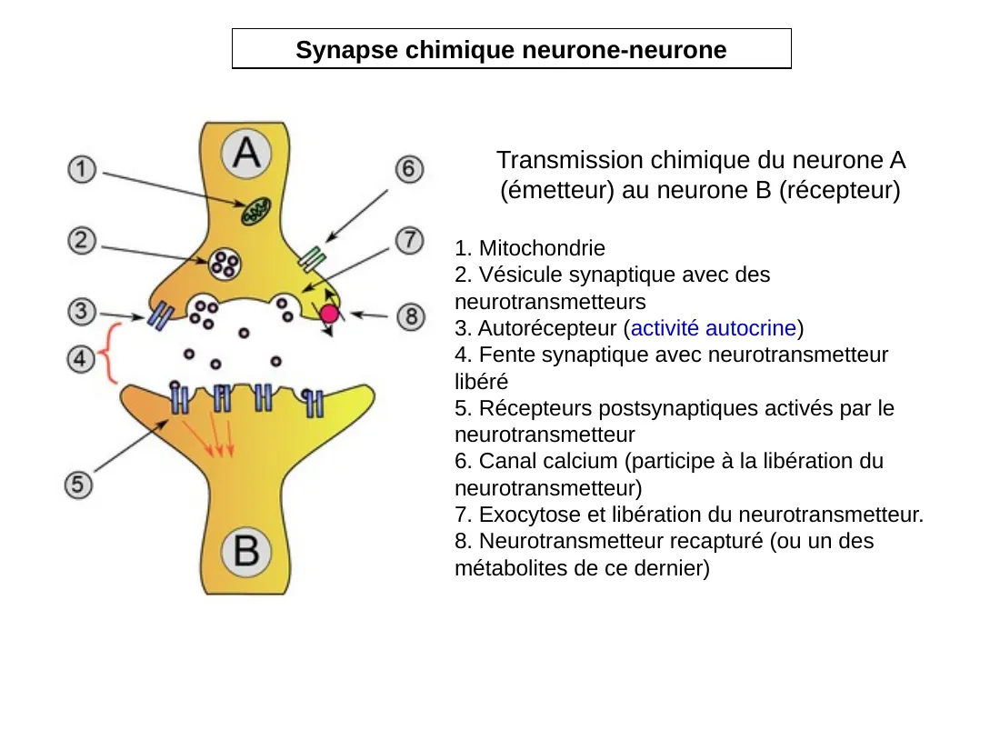
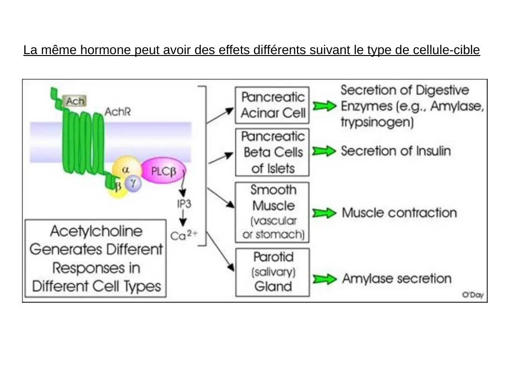
| Messager | Mode d'action | Exemple |
|---|---|---|
| Hormone classique | Glande endocrine → sang → récepteurs d'un organe à distance (endocrine) | Insuline des cellules β (≠ pancréas exocrine : enzymes vers le duodénum) |
| Médiateur (ex-« hormone locale ») | Pas dans le sang : sur les cellules voisines (paracrine) ou sur elle-même (autocrine) | Histamine (mais endocrine dans le choc anaphylactique), NO, prostaglandines |
| Cytokine | Peptides solubles, auto-, para- ou endocrines ; croissance, involution, immunité | IL-1, IL-6, TNF-α (pro-inflammatoires), interférons |
| Neurotransmetteur | Libéré dans la fente synaptique (paracrine ; autocrine via autorécepteur) | Acétylcholine, catécholamines, sérotonine, glutamate, GABA, glycine ; neuropeptides |
Produit dans un neurone, retrouvé dans les boutons terminaux, libéré à l'arrivée d'un potentiel d'action, effet sur le neurone post-synaptique, puis inactivé (recapture ou dégradation). Plus de 60 molécules. 50 % des synapses du SNC sont glutamatergiques.
1) Synthèse locale dans le bouton (ex. choline acétyltransférase : choline + acétyl-CoA → acétylcholine ; les neuropeptides, eux, sont faits dans le corps cellulaire). 2) Excrétion : entrée de Ca²⁺ → exocytose des vésicules. 3) Fixation au récepteur → cascade. 4) Inactivation : enzyme (acétylcholinestérase) ou recapture.
À la jonction neuromusculaire, elle se fixe sur les récepteurs nicotiniques (5 sous-unités, récepteur canal) → entrée de Na⁺ → dépolarisation de la fibre → contraction. L'acétylcholinestérase en hydrolyse environ la moitié ; la choline est recaptée.
« Notre système hormonal n'est pas en mesure d'envoyer un messager ayant une destination précise » : la sélectivité vient de la répartition des récepteurs. Une même hormone, un même second messager (AMPc) peuvent avoir des effets opposés selon la cellule. Les mêmes récepteurs à différents endroits expliquent les effets indésirables des médicaments.
On veut augmenter la dopamine dans le SNC, mais les récepteurs dopaminergiques existent aussi en périphérie (tube digestif : nausées, vomissements). La dopamine ne passe pas la barrière hémato-encéphalique ; la L-DOPA oui. L'inhibiteur périphérique limite sa transformation hors du cerveau, donc les effets indésirables (repris en 2.10).
Une molécule d'hormone active un récepteur, qui active de nombreuses molécules effectrices : la transduction amplifie le signal (cascade).
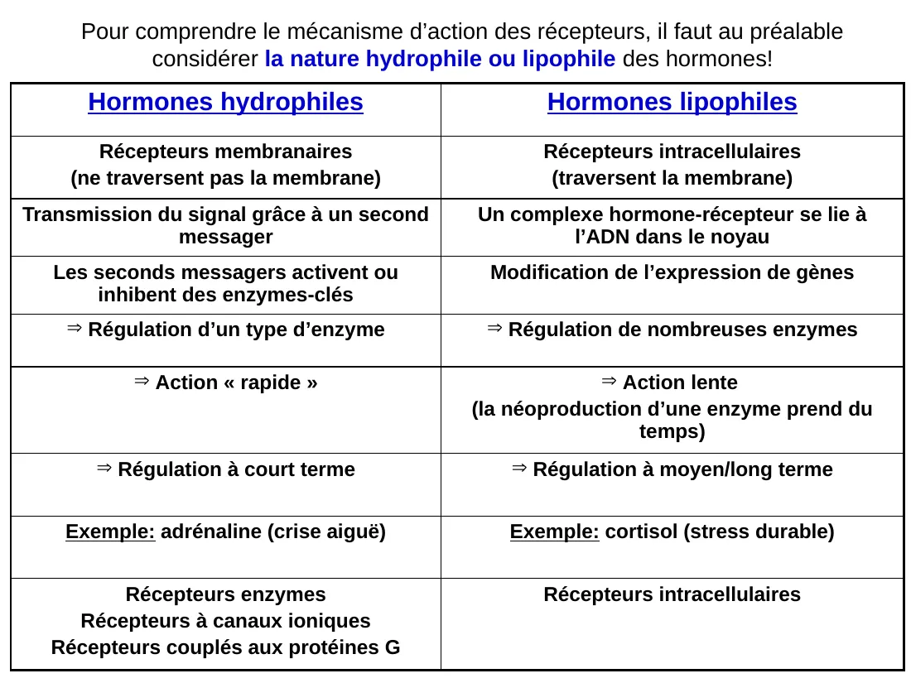
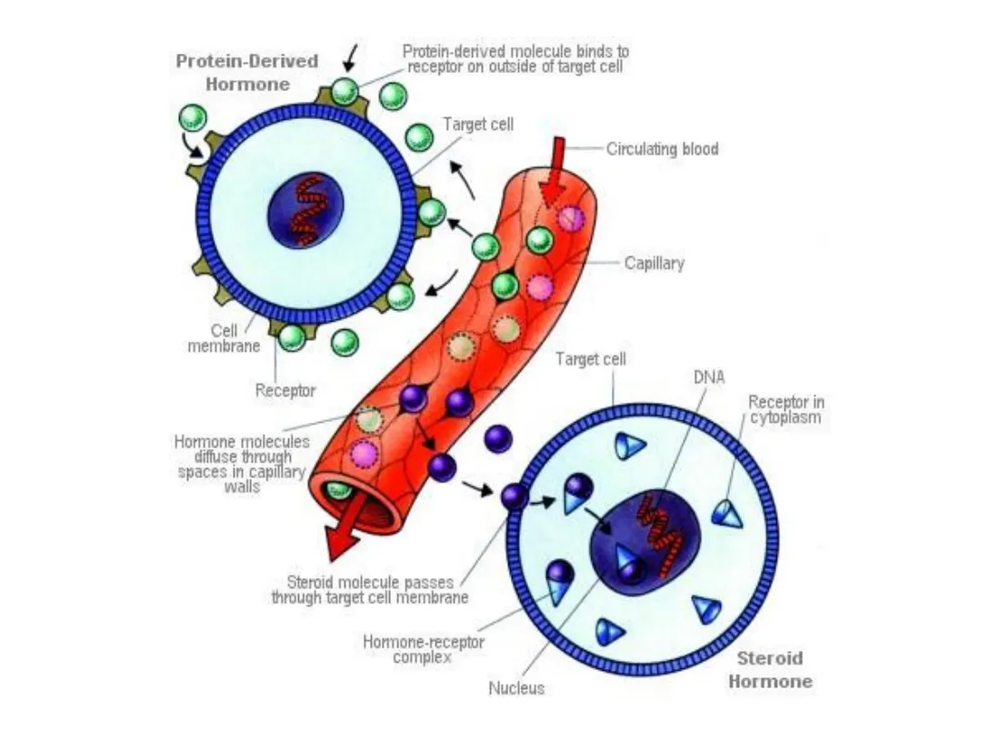
| Hormones hydrophiles | Hormones lipophiles | |
|---|---|---|
| Récepteur | Membranaire (ne traversent pas) | Intracellulaire (traversent la membrane) |
| Transduction | Second messager → active/inhibe des enzymes-clés (phosphorylation) | Complexe hormone-récepteur → ADN → expression de gènes |
| Cible | Un type d'enzyme | De nombreuses enzymes |
| Vitesse | Rapide, court terme | Lente (néosynthèse de protéines), moyen/long terme |
| Transport sanguin | Libres dans le plasma | Liées à des protéines de transport |
| Exemples | Adrénaline, insuline, glucagon | Cortisol (stress chronique), hormones thyroïdiennes, hormones sexuelles |
L'exemple du prof : recevoir sa copie d'examen = stress immédiat → adrénaline (hydrophile, effet en secondes). La période de blocus = stress qui s'installe → cortisol (lipophile, effet lent par les gènes). Le cortisol mesuré en fin de session est plus élevé.
L'adrénaline (hydrophile) agit via un récepteur membranaire et un second messager qui phosphoryle des enzymes déjà présentes. Le cortisol (lipophile) agit sur un récepteur intracellulaire qui modifie l'expression de gènes : il faut synthétiser de nouvelles protéines.
1) Récepteurs-enzymes (tyrosine kinase : insuline ; guanylate cyclase : ANP). 2) Récepteurs canaux ioniques (nicotinique, GABA-A). 3) Récepteurs couplés aux protéines G (le plus grand groupe : adrénaline, glucagon). 4) Récepteurs intracellulaires (cytoplasmiques ou nucléaires : stéroïdes, hormones thyroïdiennes).
Soit par phosphorylation/déphosphorylation des enzymes-clés (hydrophiles), soit en modifiant la quantité d'enzyme synthétisée (lipophiles). Exemple spécialisé : l'ADH fait insérer des aquaporines dans les cellules du tubule rénal.
Trois familles : peptidiques (hydrophiles), stéroïdes (lipophiles, dérivées du cholestérol), dérivées d'acides aminés (hydrophiles, sauf les hormones thyroïdiennes, lipophiles). À part : eicosanoïdes (acide arachidonique) et acide rétinoïque (vitamine A). La classification (dias 36-37) est à connaître, mais « n'étudiez pas ça bêtement par cœur » : vous la reverrez chapitre par chapitre.
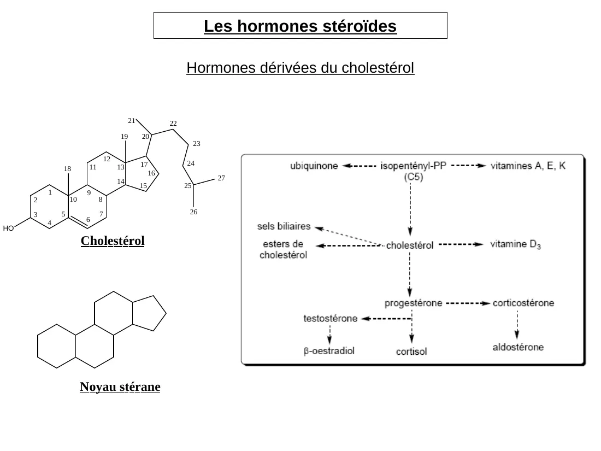
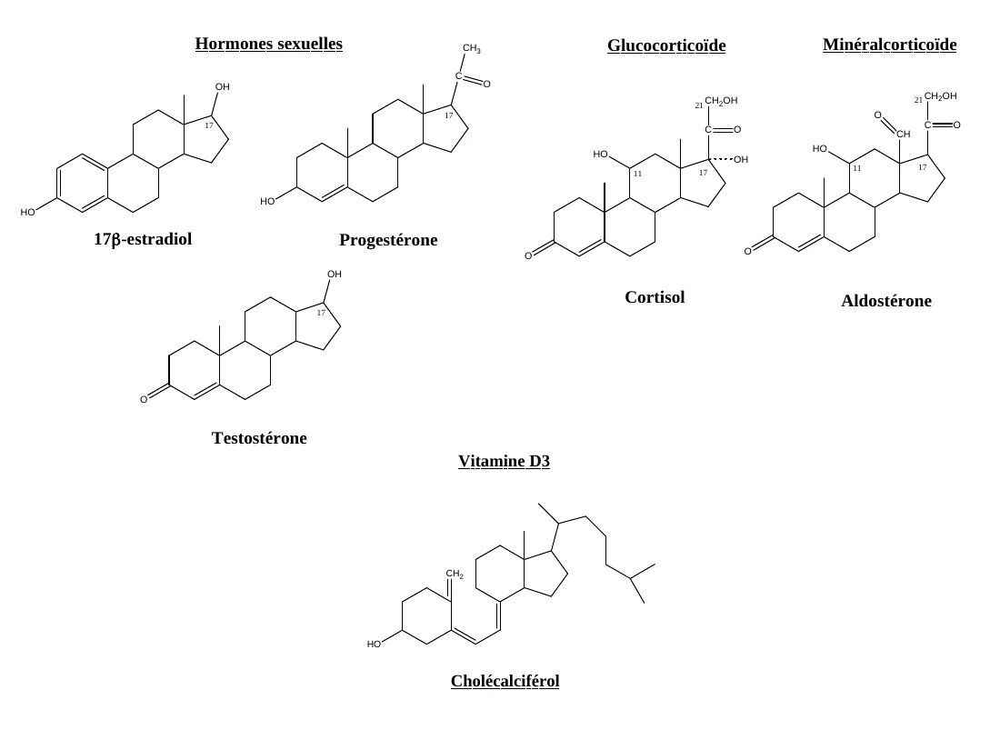
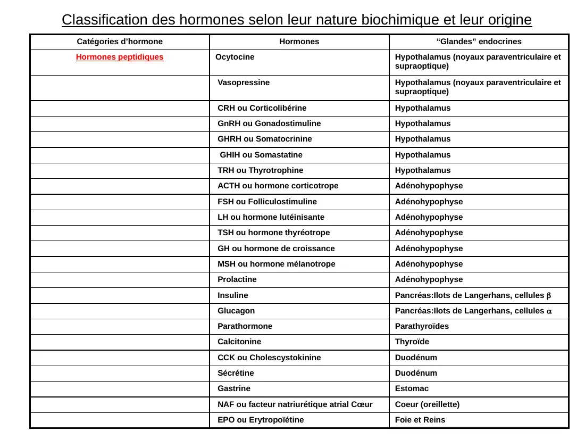
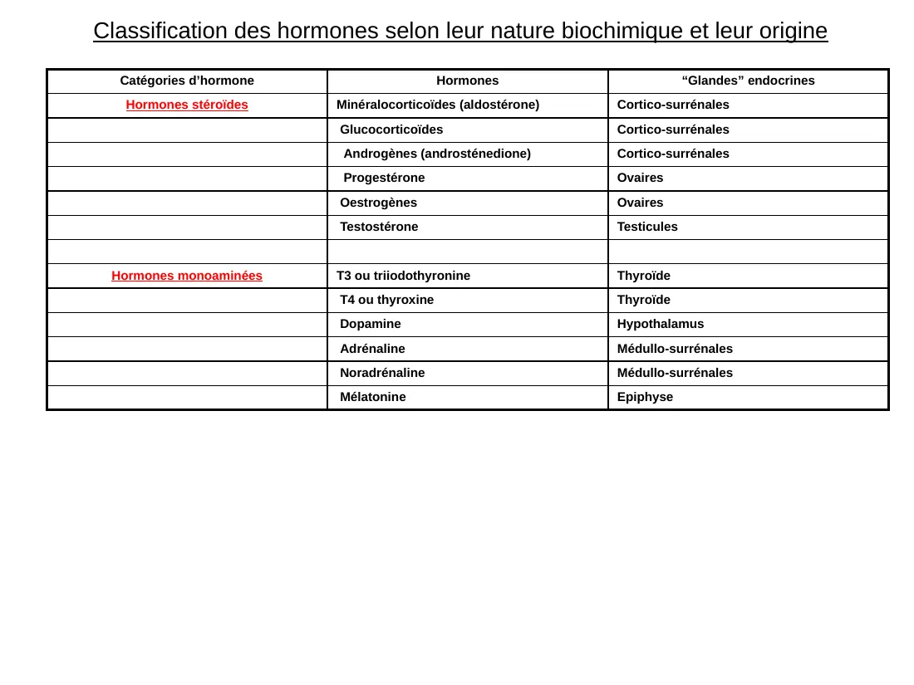
Séquence codée par l'ADN ; traduction dans les ribosomes puis le RE rugueux ; modifications dans le RE et le Golgi ; stockage en vésicules ; sécrétion au signal (souvent ↑ Ca²⁺ intracellulaire) ; transport libre dans le sang ; récepteur membranaire.
Base de toutes les hormones stéroïdes : trois cycles à 6 carbones et un cycle à 5 carbones (dessiné au tableau). Le cholestérol (27 C) est le point de départ des hormones sexuelles, des glucocorticoïdes, des minéralocorticoïdes et de la vitamine D.
Pas de stockage (elle diffuse dès sa synthèse) ; transport sanguin lié à des protéines (albumine ou protéines spécifiques) ; traversée de la membrane ; récepteur intracellulaire ; métabolisme hépatique (biotransformation puis conjugaison) avant élimination.
Souvent de la tyrosine. Les catécholamines (adrénaline, noradrénaline, dopamine) sont hydrophiles (récepteurs membranaires). Les hormones thyroïdiennes (T3, T4) sont les seules lipophiles du groupe : récepteurs intracellulaires.
Hypothalamus : ocytocine, vasopressine (ADH), CRH, GnRH, GHRH, somatostatine, TRH, dopamine. Adénohypophyse : ACTH, FSH, LH, TSH, GH, prolactine, MSH. Corticosurrénales : aldostérone, cortisol, androgènes. Médullosurrénales : adrénaline, noradrénaline. Thyroïde : T3, T4, calcitonine. Parathyroïdes : PTH. Pancréas : insuline (β), glucagon (α), somatostatine, PP. Ovaires : œstrogènes, progestérone. Testicules : testostérone. Épiphyse : mélatonine.
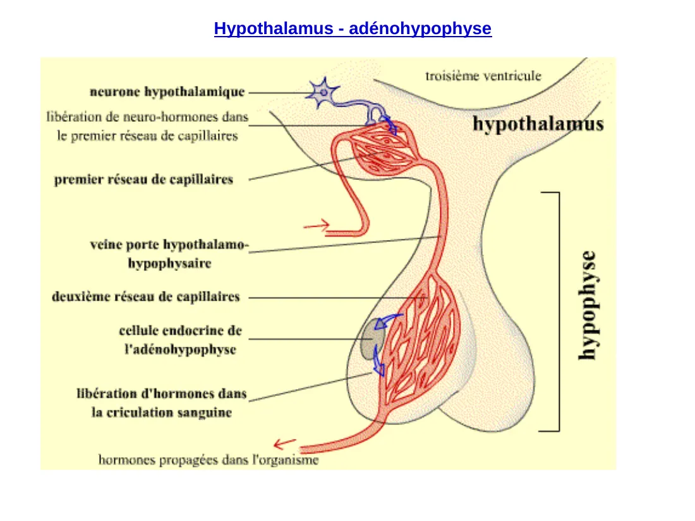
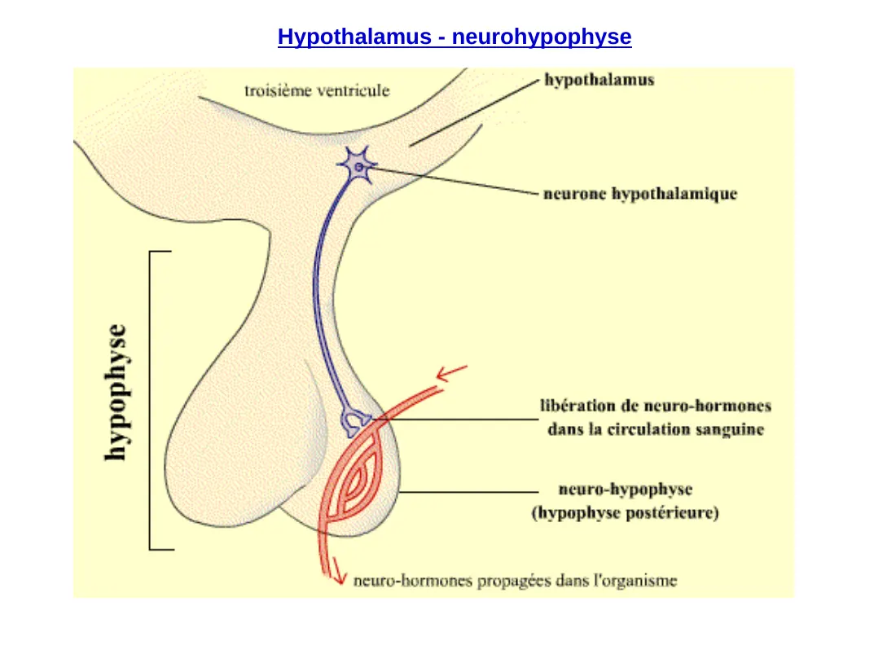
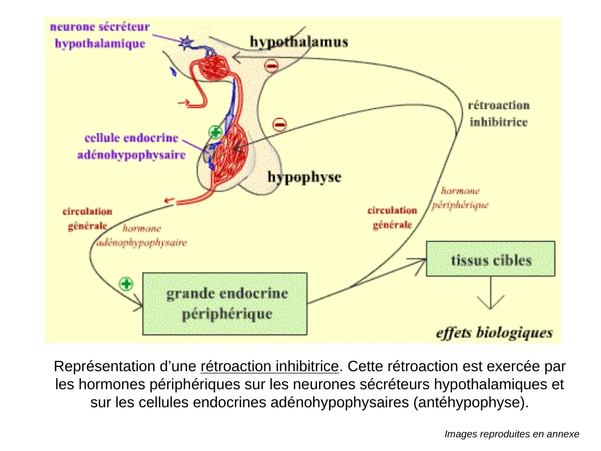
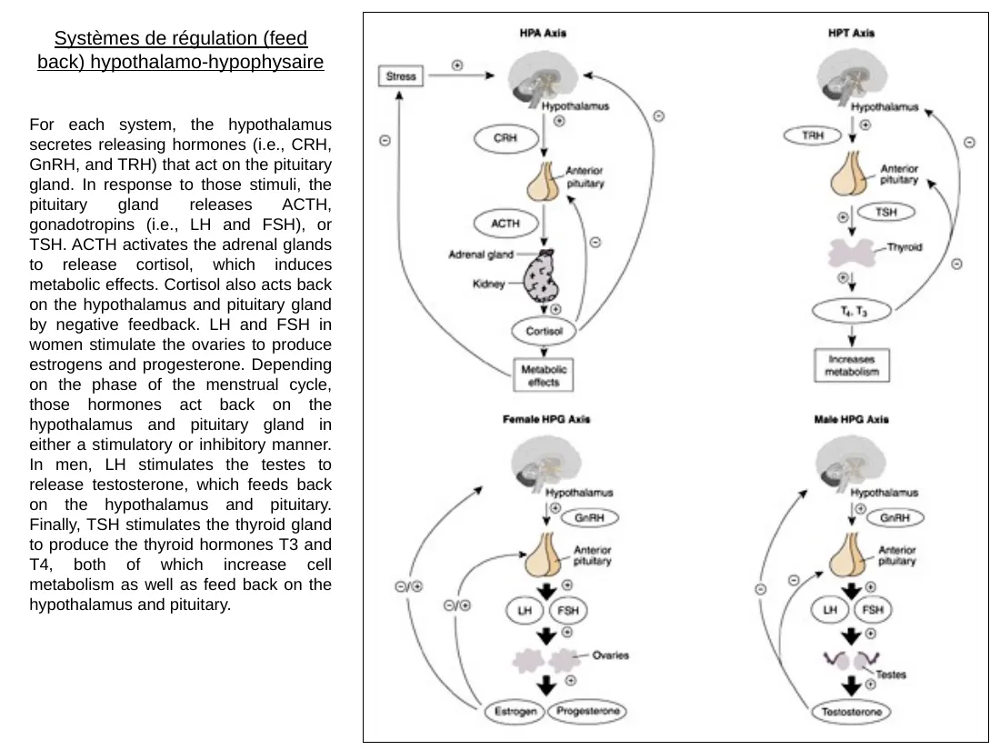
Contrôlée par l'hypothalamus via des libérines (releasing hormones, stimulent) et des statines (inhibiting hormones) déversées dans le système porte hypophysaire. Elle sécrète des stimulines qui agissent sur une autre glande, sauf la GH et la prolactine qui agissent directement.
Projection de l'hypothalamus : elle ne fabrique rien, elle stocke et libère l'ocytocine et la vasopressine (ADH), produites par les noyaux paraventriculaire et supraoptique de l'hypothalamus et descendues le long des axones.
Pour que le système ne s'emballe pas, les hormones périphériques (ex. cortisol) freinent l'hypothalamus et l'hypophyse quand leur concentration dépasse un seuil. Exception : les œstrogènes peuvent exercer un rétrocontrôle positif selon la phase du cycle (chapitre 2.7).
Le cortisol exogène freine en permanence CRH et ACTH : les surrénales ne sont plus stimulées et s'atrophient. À l'arrêt brutal, elles ne produisent plus assez de cortisol (repris en 2.3).
Récepteur à activité tyrosine kinase (insuline, IGF, EGF, PDGF) : l'hormone se lie → autophosphorylation des tyrosines de sa propre chaîne (à partir d'ATP) → phosphorylation de protéines intracellulaires qui propagent le signal. Ces récepteurs sont liés à la croissance et la division cellulaire.
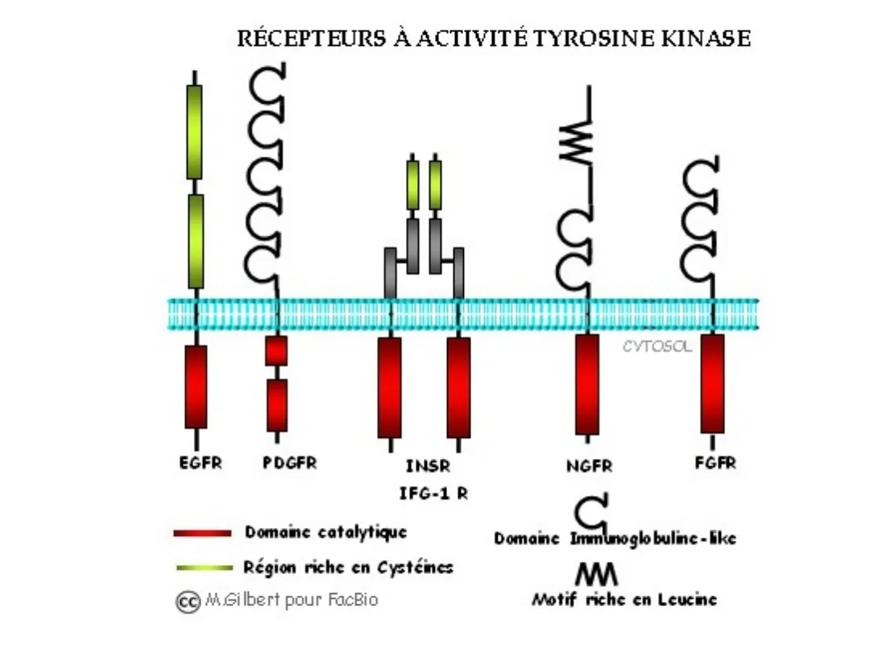
Une kinase transfère un phosphate de l'ATP sur une tyrosine. Cibles pharmacologiques : pour information imatinib (GLIVEC®, inhibiteur de la tyrosine kinase BCR-ABL du chromosome Philadelphie, leucémie myéloïde chronique) ; trastuzumab (HER2, cancer du sein).
Deux formes : membranaire (activée par l'ANP de l'oreillette) et soluble (activée par le NO qui traverse les membranes). Elles forment du GMPc à partir du GTP → protéines kinases → vasodilatation. Le GMPc est dégradé par les phosphodiestérases (PDE).
C'est un inhibiteur de la PDE5, présente surtout dans les corps caverneux : le GMPc n'est plus dégradé, la vasodilatation locale (érection) est prolongée. La sélectivité n'est pas parfaite : effets cardiovasculaires possibles, d'où la contre-indication (comme le tadalafil, le vardénafil).
Inhibiteurs compétitifs non spécifiques des phosphodiestérases (11 types) : l'AMPc dure plus longtemps. Le prof : beaucoup de café → inhibition générale des PDE → migraines possibles.
Le ligand ouvre (ou ferme) le canal, qui est le récepteur lui-même. Canaux cationiques (Na⁺, Ca²⁺ ; ex. nicotinique) → dépolarisation, excitabilité ↑. Canaux anioniques (Cl⁻ ; ex. GABA-A) → hyperpolarisation, excitabilité ↓. Il existe aussi un canal Ca²⁺ intracellulaire, sensible à l'IP3, sur le RE.
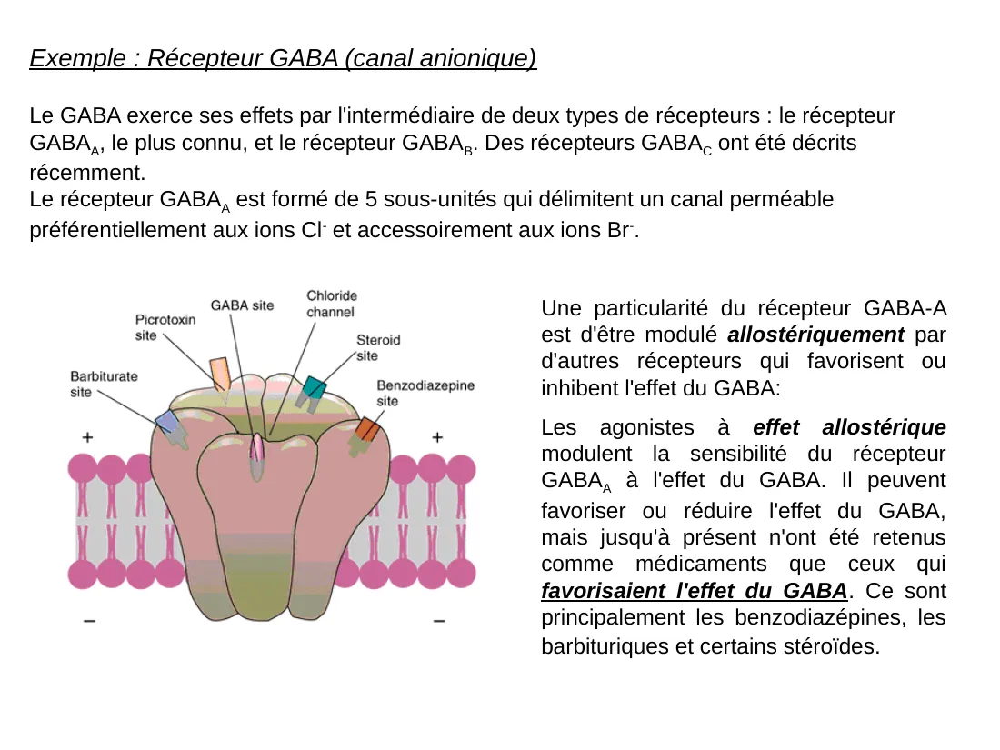
5 sous-unités autour d'un canal à Cl⁻. Il est modulé allostériquement : benzodiazépines, barbituriques, alcool, certains anesthésiques le rendent plus sensible au GABA → le canal s'ouvre davantage → beaucoup de Cl⁻ entre → la cellule « s'endort » (sédation, effet anxiolytique, sommeil).
Le Cl⁻ est chargé négativement : en entrant, il rend l'intérieur encore plus négatif (hyperpolarisation). Le potentiel de membrane s'éloigne du seuil : la cellule est plus difficile à dépolariser. « C'est purement une question de charge positive et négative. »
Question d'examen annoncée : « Expliquez-moi, sur un schéma, l'activation d'un récepteur couplé à une protéine G, sous-unité αs ».
Le schéma : 7 hélices transmembranaires (N-terminal dehors, C-terminal dedans) → ligand → changement de conformation → la sous-unité α échange son GDP contre un GTP et se détache de βγ → effecteur → second messager → l'activité GTPase de α hydrolyse le GTP et tout revient au repos.
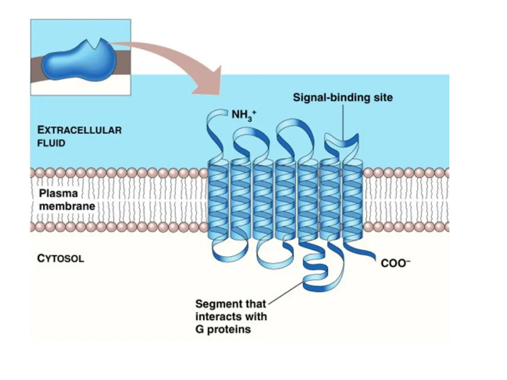
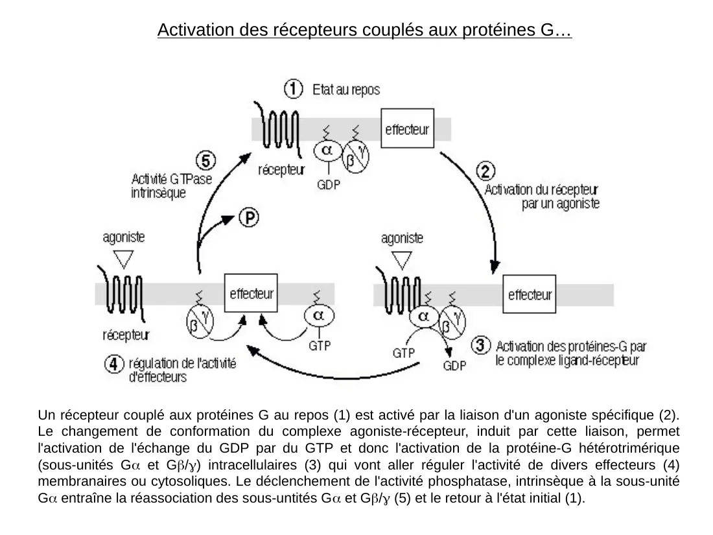
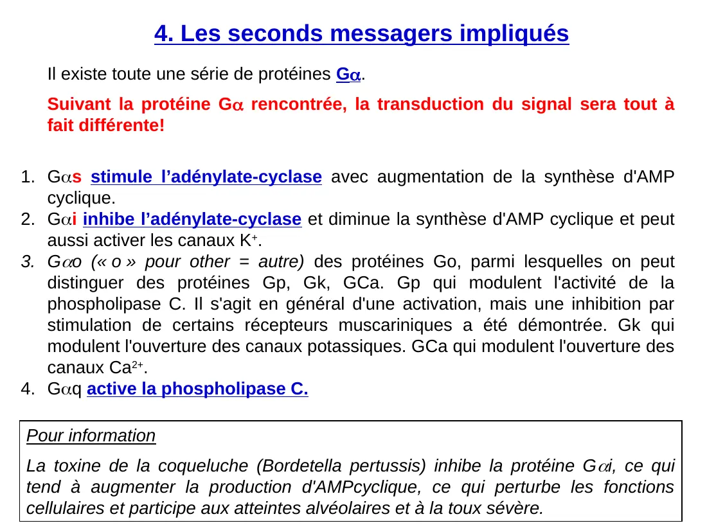
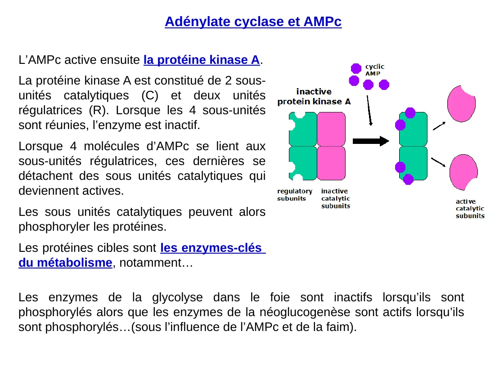
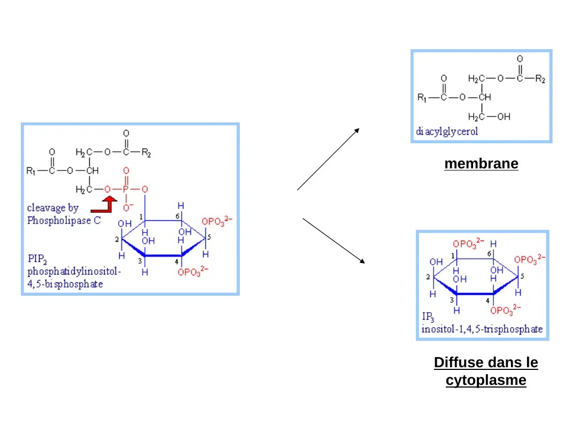
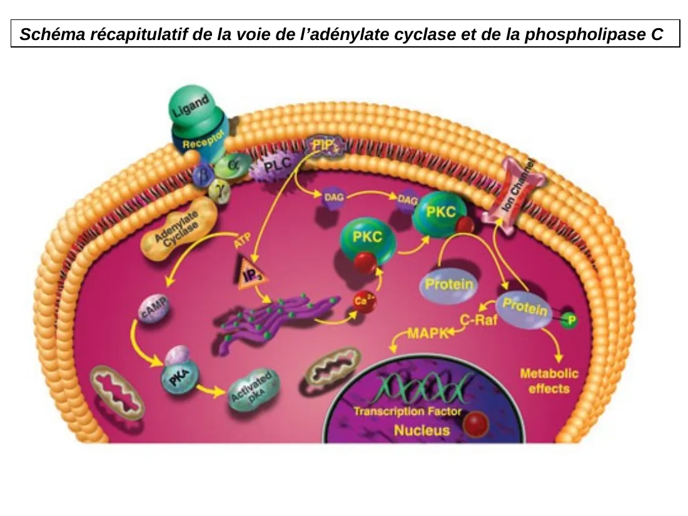
| Sous-unité | Effecteur | Second messager | Exemple |
|---|---|---|---|
| αs | Stimule l'adénylate cyclase | AMPc ↑ → PKA | Glucagon, adrénaline (β) |
| αi | Inhibe l'adénylate cyclase (+ ouvre des canaux K⁺) | AMPc ↓ | α2-adrénergique |
| αq | Active la phospholipase C | IP3 (Ca²⁺) + DAG → PKC | α1-adrénergique (vasoconstriction), angiotensine II |
L'adénylate cyclase transforme l'ATP en AMPc, « signal de faim (F-A-I-M) ou de stress ». Il se lie aux 2 sous-unités régulatrices de la PKA (4 AMPc) qui libèrent les 2 sous-unités catalytiques → phosphorylation des enzymes-clés (dans le foie : glycolyse inhibée, néoglucogenèse et glycogénolyse activées). Dégradé par les phosphodiestérases en 5'-AMP.
pour information Elle bloque l'adénylate cyclase des entérocytes en position active : AMPc élevé en permanence → sécrétion excessive d'ions dans l'intestin → l'eau suit.
Via αq, la PLC coupe le PIP2 de la membrane en IP3 (hydrophile, diffuse dans le cytoplasme, ouvre les canaux Ca²⁺ du RE) et DAG (lipophile, reste dans la membrane). Le Ca²⁺ (« troisième messager ») + le DAG activent la protéine kinase C. Le Ca²⁺ se lie aussi à la calmoduline. Effets : contraction des muscles lisses et cardiaque, sécrétions, libération de neurotransmetteurs.
Photons (rhodopsine), ions, odeurs et goûts, acides aminés (glutamate, GABA-B), amines (acétylcholine muscarinique, adrénaline, dopamine, histamine, sérotonine, mélatonine), nucléotides, lipides (prostaglandines, leucotriènes, thromboxane), peptides. Le prof utilise des synonymes : RCPG = récepteur métabotropique ; récepteur canal = ionotropique. « Un examen peut taper des synonymes. »
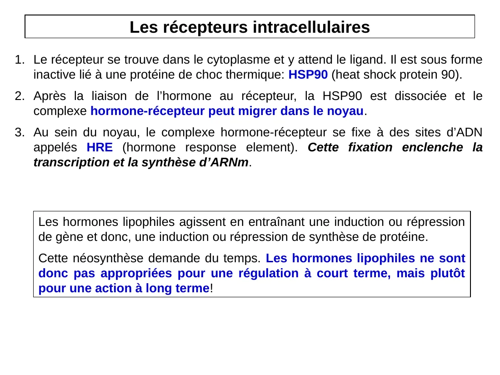
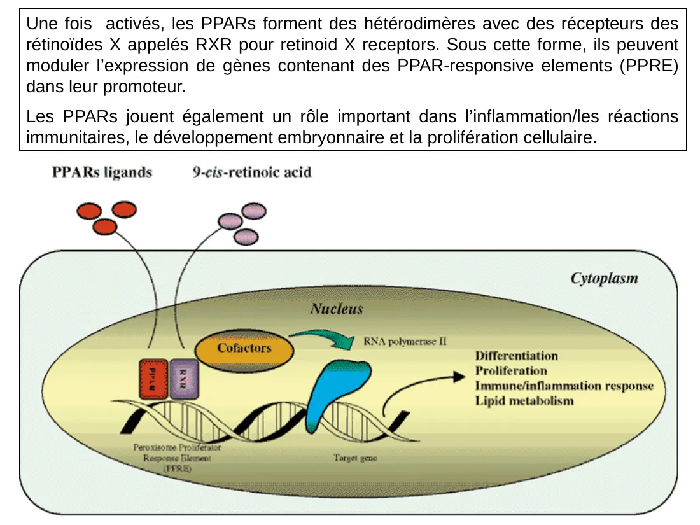
Le récepteur attend dans le cytoplasme, inactivé par une protéine de choc thermique HSP90 (ou directement dans le noyau). L'hormone lipophile se lie → HSP90 se détache → le complexe migre dans le noyau → se fixe sur l'HRE (hormone response element) de l'ADN → transcription ↑ ou ↓. Effet lent mais durable.
pour information Ligand du récepteur intracellulaire des œstrogènes : effet anti-œstrogène sur le sein (cancers hormono-dépendants), effet œstrogène sur l'endomètre et l'os.
Récepteurs nucléaires activés par les AG et leurs dérivés, qui s'associent au RXR et agissent sur les PPRE. PPAR-α : surtout le foie (moyen mnémotechnique du prof : « alpha-foie ») → cible des fibrates (hypolipémiants). PPAR-γ : surtout le tissu adipeux → cible des glitazones (thiazolidinediones, antidiabétiques). PPAR-β/δ : ubiquitaires.
Relevé dans tes enregistrements : cours de présentation et chapitre 2 du 21/09/2026 (RS, qui fait l'examen) et cours 2.2 de 2025.
Questions dites en cours (dates) ou reformulées à partir d'un point sur lequel le prof a insisté. Réponds sur papier avec un schéma, puis ouvre la réponse.
Sur la base d'un schéma, illustrez le fonctionnement d'un récepteur couplé à une protéine G avec sous-unité αs, puis expliquez les différences avec une sous-unité αi et αq.
Variante : sur la base d'un schéma, illustrez le fonctionnement d'un récepteur à activité tyrosine kinase / d'un récepteur canal ionique.
Un patient anxieux prend une benzodiazépine le soir avec deux verres de vin. Il est retrouvé très somnolent. Expliquez au niveau du récepteur.